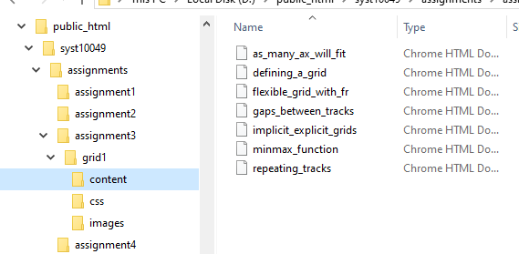

Assignment 3
Instructions
Information
- Create a new project with standard file organization.The site has a home page (index0.html) and seven (7) secondary pages.
- Each page starts with a minimal HTML5 document and standard/common content organization (header, footer, nav, and main).
- The site title is "Learning grid layout
- Every file (HTML and CSS) must be validated and contain proper documentation, including an updated full prologue. Don't forget to update the TITLE element for every page.
SYST10049 Web Development
@2021-2024 Sheridan College
Familiarize yourself with SLATE
File organization

There is one file in the css direction, style.css (see next slide)
Secondary pages
- Complete the Creating your grid in CSS section of the Grids MDN tutorial
- Examine the rendered pages for each sub-section of the tutorial on the following slides. Create each page using the tutorial and corresponding slide.
- Make sure you complete the HTML for the navigation with the given CSS. The navigation must work from any page to any other page.
- All pages must render as on the slides.
- Make sure you include comments explaining in your own words how the various declarations work.
- Once completed, publish as assignment3 on dev.fast.sheridanc.on.ca. and attach the project zip file to the dropbox and provide full web URL to index0.html of your project together with credentials in the text submission of the dropbox.
<!DOCTYPE html>
<html lang="en">
<head>
<title>Meaningful title</title>
<meta charset="utf-8">
</head>
<body>
</body>
</html>
What we are building this semester!
The best programs are written so that computing machines can perform them quickly and so that human beings can understand them clearly. A programmer is ideally an essayist who works with traditional aesthetic and literary forms as well as mathematical concepts, to communicate the way that an algorithm works and to convince a reader that the results will be correct.
Donald E. Knuth
SYST10949 Web Development
@2021-2024 Sheridan College
...
SYST10049 Web Development
@2021-2024 Sheridan College